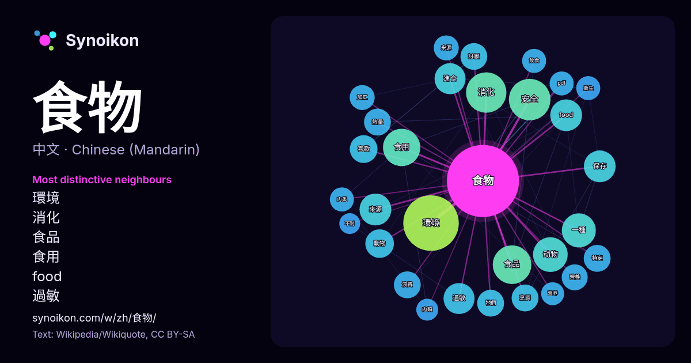

中文 · 热门词
食物
“food” · 来自维基百科, Wikiquote 1369 次出现中其周围的词。

最具特色的邻近词
- 環境 34×
- 消化 32×
- 食品 24×
- 食用 23×
- food 21×
- 過敏 20×
- 進食 20×
- 动物 17×
- 來源 16×
- 安全 16×
- 烹調 15×
- 熱量 15×
- 保存 15×
- 浪費 15×
- 討厭 14×
- 營養 14×
- 肉类 13×
- pdf 13×
- 牠們 12×
- 加工 12×
× = 比维基百科普通文本中多出的倍数。
最常见的邻近词
- 環境 64
- 主要 42
- 包括 41
- 安全 36
- 消化 34
- 食品 31
- 食用 29
- 不同 27
- 动物 25
- 一種 24
- 通常 23
- food 21
- 作為 21
- 來源 21
- 保存 21
- 進食 20
- 過敏 20
- 重要 20
- 提供 19
- 政府 19
上下文
- 食物，又稱食品，是為生物提供營養的物質。它們一般間接或直接取自植物、動物、真菌的各部分，並含有碳水化合物、脂肪、蛋白質、维生素、礦物質等生物所需營養素。食物在經生物消化後，會被其細胞吸收，用以提供能量、維持生命、滿足生理需求、幫助成長。動物之間的攝食行為各異；牠們亦按地理環境演化，佔據特定的生态位。 Wikipedia snippets · 食物
- 肉类食物简称肉食或肉，或称肉菜、荤腥、腥食，是從各种動物身上获取的肌肉、脂肪等软组织以及一些相关的器官，在进食后可为身体提供营养的食物，是自然界许多食肉动物和杂食动物（包括人）生存、发育和繁衍所必需，也是野生动物之间掠食和食腐行为的主要原因。 肉食对人类来说是一种重要的副食品，但现代人通常不会不经 Wikipedia snippets · 肉类食物
- 变质、腐败指的是食物恶化、对于人类的可食用性下降的过程。 收割的食品，从它们被收割后就开始分解，这是酶、氧化和微生物引起的，具体包括细菌、黴菌、酵母菌、湿度、温度和化学反应。 食用变质食品，严重的会导致食物中毒。 防止食物变质的方法包括：防腐剂、冷藏、罐裝、真空包裝、乳酸发酵等。 分解作用 食品保存 Wikipedia snippets · 食物变质
- 食物環境衞生署（簡稱食環署，英語：Food and Environmental Hygiene Department，縮寫：FEHD）是香港特別行政區政府環境及生態局轄下的部門，專責確保香港的食物安全，以及為香港市民提供清潔和衛生的環境。 食物環境衞生署由首長級甲級政務官擔任的食物 Wikipedia snippets · 食物環境衞生署
- 它的消耗量并不是很大，甚至在剛引進至英國愛爾蘭時，有很長的一段時間，馬鈴薯都只是作為奇花異草觀賞。到了19世纪欧洲人口膨胀时期，馬鈴薯已经成为重要的食物和农作物。根据保守估计，馬鈴薯的引进在1700年至1900年间至少造成旧大陆四分之一的人口增长以及促进了欧洲的城市化过程。在1845年至1848年之间，一场名为“晚疫病”（late Wikipedia snippets · 马铃薯
- 食物熱量（英語：food energy），泛指食物經過消化，通過細胞的代謝，所能獲得的能量。單位以每公克焦耳或每公克卡路里方式表示。在實驗室中，將食物燃燒，去計算其燃燒所消耗的重量，與其加熱造成水的溫升做計算，以測出食物熱量。 FAO Food and Nutrition Paper 77: Food Wikipedia snippets · 食物熱量
- 國家代表食物（英語：National Dish），又稱國菜、國民美食。指代表一個國家或地區的特色食物或菜餚。 特定菜餚能被選為國菜的原因很多，包括以下： 一個國家的主食。 包含了外國引進但本地栽種的食材。 代表國家的文化遺產（如宗教因素只能吃特定食物）。 政府指定推廣的特定國家食品。 Wikipedia snippets · 國家代表食物
- 分子食物（英語：Molecular gastronomy）又稱為分子美食、分子料理，被人们称为未来食物、人造美食，所谓的分子食物是指把葡萄糖(C6H12O6)、维生素C(C6H8O6)、柠檬酸(C6H8O7)、麦芽糖醇(C12H24O11)等等可食用的化学物质进行组合或改变食材分子结构，再重新组合。 Wikipedia snippets · 分子食物
更多词
于 2026-10-09 以默认设置预先计算（±5 个词，中等语料）。交互式图可用实时数据刷新。
界面为机器翻译，欢迎指正。